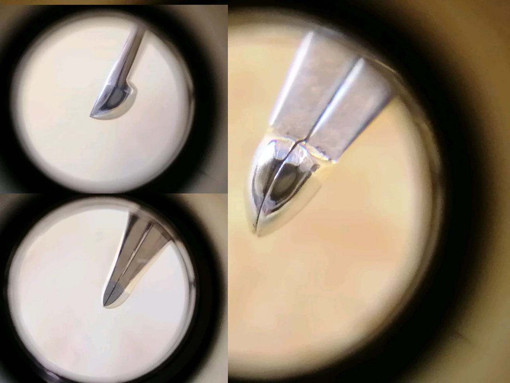

|2025-01-04|
久闻长刀研大名。奈何写乐原厂长刀高昂的价格和不稳定的品控（据说）实在让人望而却步。国内的一流师傅那堪比笔价的打磨费……
看来看去，百乐 74bb 是最便宜的且可用于打磨长刀的底子了，但是碍于这项计划的复杂，也一直没抽出时间去买笔改笔。偶然跟群友提到要拿 74 去改长刀，ludlow 大佬劝我去收支君锋 jfm 先体验一下。但是考虑到大小铱的龙年纯银 601 和不下水的梅紫 601 14k ef，我还是绝了买君来的念头。
于是，我迅速把 74 改刀提上日程。淘金币抵扣的 74bb 花了477，留给改笔的预算就不多了。选来选去，还是来请之前在贴吧认识的师傅来改，虽然不是有很悠久改笔名声的师傅，但是看来评价还是很不错的，而且价格也稍便宜一些。
74bb 是带一个板牙书写面的粗尖，而师傅在尽量保留铱粒的情况下成功磨成了一个 0.5~0.6 的小长刀研。圆肚尖头，应该模仿的是长原幸夫的风格。
第一次上的墨水是戴阿米尼罗河蓝，非常有韵味的蓝色。但是配合这个开缝就太大水枪了。换成自己调配的鸵鸟 1456 下水正常，可出牵丝。拿出尘封在柜子里的蒙肯纸，控笔能力还是不到成熟的水准，不过控制住这个 5 号尖的小长刀还是没问题的。74的笔尖并不软也并不硬，韧性十足，反应迅速，非常和我的胃口。
计划是高考之后找个老师猛猛练字，现在没这个闲情逸致就是了。这支小长刀让我彻底迷上了长刀研，不过还要体验的笔尖还很多，找国内一流师傅磨个长刀还是往后稍稍，等练完字再说吧。钢笔圈因为金价大涨近几年很不景气，也是很烦人的一件事。